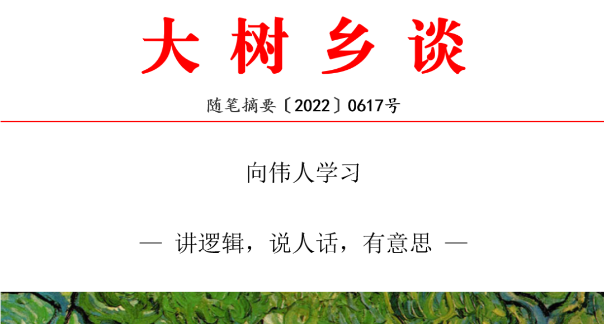
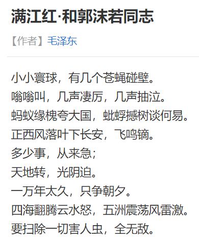

伟人留给中国人的巨大宝藏

今天的正文题目来自于毛主席的写于1962年冬的一首词《满江红·和郭沫若同志》，当时中国还没有两弹一星，中苏关系断裂，中国面临两大阵营的封锁和威胁，国内也出现了一些困难。

当时中国面临的困难远高于现在。但就算在这种情况下，主席仍然把那些反华势力看成苍蝇、蚂蚁、蚍蜉，投以蔑视的目光，充满对胜利的信心。60年过去了，中国克服了很多困难，现在排在中国前面的也只有美国了，一甲子映证了伟人的眼光。小镇经常推荐毛主席的著作，重点在于学习毛主席的格局、胸怀，学习毛主席在面临困难和挑战时是怎么做的，对青年人而言，还可以学习毛主席在青年时代是如何从一个村娃子不断成长，在这个过程中是如何自我学习、奋斗、了解中国并改变中国的，这不就是最好的个人发展学习范例？现在很多人非常迷茫，尤其是年轻人，有梦想但在当下却找不到自己的路。
我们当然不能按照伟人的标准要求自己，但我们毕竟有时代的优势，我们掌握太多一百年前主席不具备的条件。我们读毛主席的著作，尤其是毛主席早期著作，以毛主席的思想、认知与胸怀感悟当代，这是多么宝贵的宝藏。很多人纠结毛选有几卷，实在捡了芝麻丢了西瓜，以普通人的能力，能够达到毛主席24岁读师范时候的认知水平已经足够立身了，又何必贪多嚼不烂？伟人的书，要常读常新。
其他文章推荐
■ 绝望中自有希望
■ 中央部委公务员的待遇与发展
如果喜欢，还请点赞、“在看”和关注吧 欢迎分享，让更多人发现“大树乡谈”